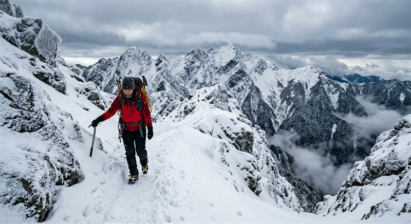

雪季登山安全須知：低估風險是最大的危險

台灣高山冬季偶有降雪，結冰路面與低溫失溫都是真實風險，出發前一定要知道的雪季登山安全守則。
每年冬季，台灣中高海拔山區都有機會遇上降雪，雪地美景吸引許多山友前往，但雪季登山的風險也大幅提高。以下是規劃雪季行程前必須了解的安全守則。
出發前的準備
- 確認路況與天氣：出發前務必查詢林務局、氣象署與國家公園的最新公告，結冰路段常常需要輔助裝備才能安全通過。
- 確認自身能力：雪地與一般步道完全不同，建議先參加雪訓課程，學習基本的冰爪、雪杖使用與滑墜自我制動技巧。
- 裝備檢查：冰爪、雪套、防水手套與足夠的保暖層是基本配備，缺一不可。
常見風險
- 結冰路面滑墜：即使坡度看起來平緩，結冰的碎石路或木棧道也可能非常滑，務必全程使用冰爪。
- 失溫：濕冷加上風寒效應，體感溫度會遠低於顯示溫度，一旦衣物濕透，失溫風險會急速上升。
- 能見度不足：降雪或濃霧會讓步道標記難以辨識，容易迷失方向，建議結伴同行並攜帶離線地圖與定位裝置。
行進中的原則
- 隨時注意隊友狀態，若有人出現手腳僵硬、說話不清、意識模糊，可能是失溫初期徵兆，應立即停下處理保暖與補充熱量。
- 遇到天候急速轉差時，應果斷折返，不要執著於原定行程，山永遠都在，安全回家才是目標。
- 保持衣物乾燥比什麼都重要，濕透的手套與外套應及時更換。
雪季山景固然迷人，但風險管理永遠應該排在行程規劃的第一位。充分的訓練、正確的裝備與保守的判斷，才能讓每一次雪地行程都平安落幕。